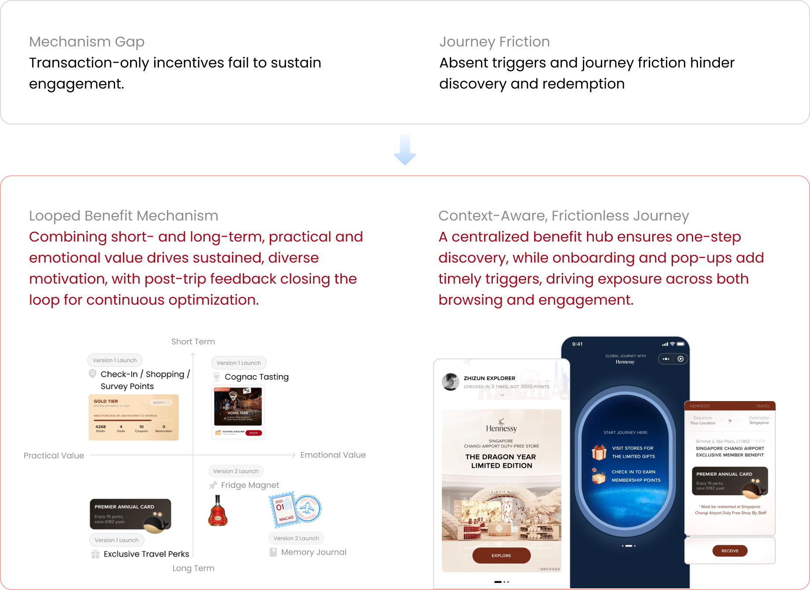
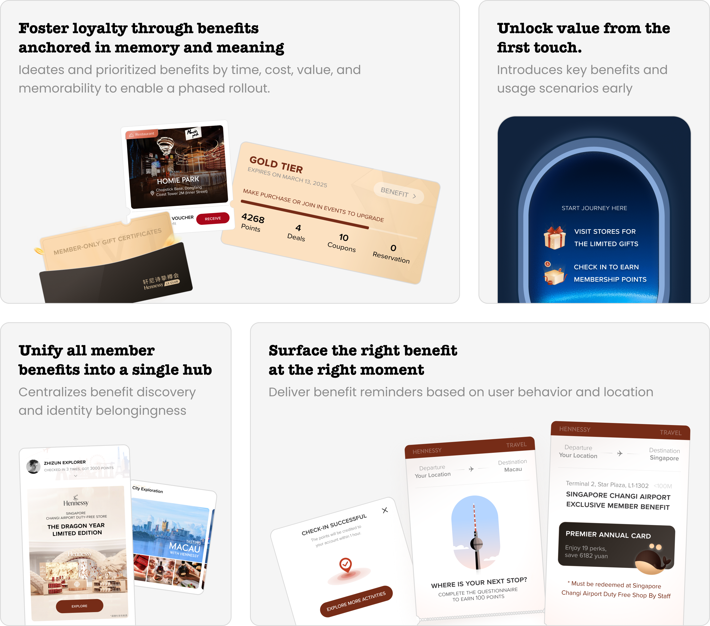
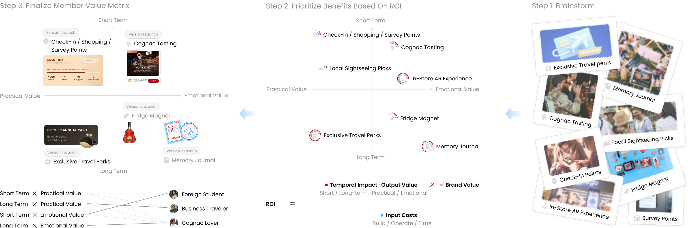
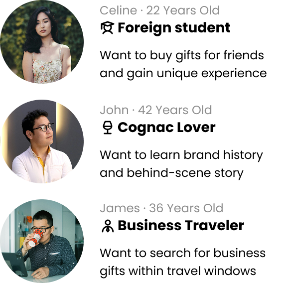
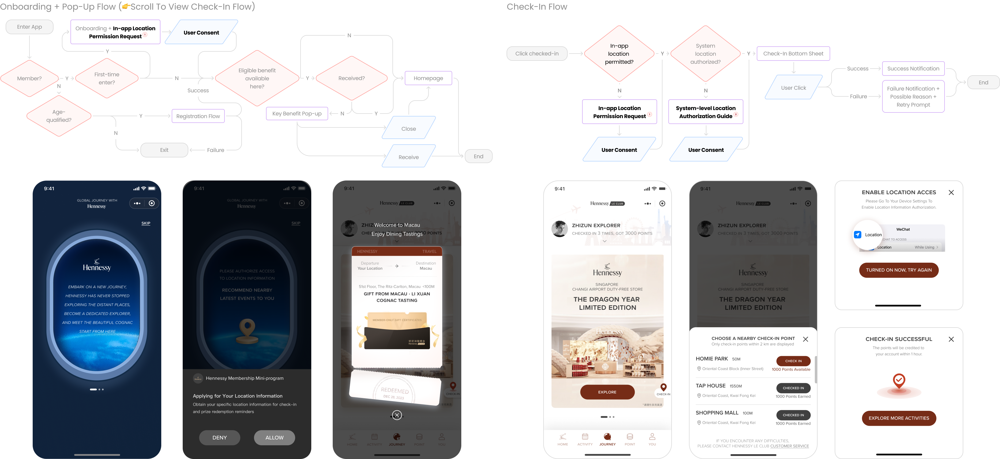

Redesigning Loyalty Beyond Transactional Rewards
Redesigning a travel-centered membership system around value and emotion,
driving +15.2% engagement and higher benefit redemption.
Team
1 Project Managers
3 Product Designers (Me)
2 Developers
3 Product Designers (Me)
2 Developers
Duration
2023.10-12
Client
Moët Hennessy Diageo China

1K+
users redeemed offline benefits during 2024 CNY (Singapore)
+15.2%
increase in store detail page visits vs. comparable past campaigns
+8.6%
higher claim rate vs. similar previous campaigns
+5.4%
higher redemption rate vs. similar previous campaigns
Business Pain Points & Outcome
Transaction-led benefits alone are no longer sufficient for members in travel scenarios.
With the diminishing price advantage of overseas purchases, demand from
Chinese consumers declined, weakening transaction-driven engagement. At
the same time, the recovery of international travel reestablished the
travel journey as a critical engagement channel beyond point-of-sale
interactions.
This exposed a structural mismatch: Hennessy's transaction-based loyalty model could no longer sustain engagement across the broader travel journey.
In response, we redesigned the travel benefit experience end-to-end.
This exposed a structural mismatch: Hennessy's transaction-based loyalty model could no longer sustain engagement across the broader travel journey.
In response, we redesigned the travel benefit experience end-to-end.

What did our process look like?
User Journey
Membership value diluted by unattractive benefits and heavy user flows.

Problem Statement
How might we
transform Hennessy membership benefits into
transform Hennessy membership benefits into
Memorable Brand Moments
that
Foster Long-Term Loyalty?
This problem goes beyond interface design.
While user-flow optimization improves usability, it cannot address the deeper experiential gaps in the three-layer framework. Benefit logic must be redefined first, as transaction-bound rewards limit engagement; interfaces and flows only amplify the value created by that logic.
While user-flow optimization improves usability, it cannot address the deeper experiential gaps in the three-layer framework. Benefit logic must be redefined first, as transaction-bound rewards limit engagement; interfaces and flows only amplify the value created by that logic.
A Memory-and-Meaning-Led Benefit Framework
with an
Always-On Digital Amplifier
Strengthens high-frequency benefit visibility and awareness,
guiding user understanding and simplifying the conversion journey.
guiding user understanding and simplifying the conversion journey.

Decision #1
Benefit Value Matrix
Reframing benefit matrix from transactional rewards toward meaningful travel moments.
Currently, the transaction-related point earning benefit leads to its inherently short-lived nature. Keeping this issue in mind, we brainstormed a diverse pool of benefit ideas for evaluation. Using a benefit matrix mapped across time impact, cost, value, and memorability, we ensured a balanced portfolio to guide decisions.
After reviewing the budget and timeline, the client approved a refined version to be implemented in two phases.
After reviewing the budget and timeline, the client approved a refined version to be implemented in two phases.

Decision #2
Always-On Digital Amplifier
A centralized benefits hub reduces flow by 50% and supports future scalability.
The existing city → store → benefit structure treats benefits as secondary endpoints, forcing users to navigate multiple location layers and increasing cognitive load as benefits expand beyond stores.
Our early concepts repeated the same tree logic, failing to support both exploratory and goal-driven behaviors.
Our early concepts repeated the same tree logic, failing to support both exploratory and goal-driven behaviors.


Left: Existing User Flow; Right: Initial Design (👆Click to enlarge)
Instead of iterating on pages, I stepped back to rethink the problem at a conceptual level, reframing this issue around persona-driven value rather than page structure.
The analysis clarified benefit components and user priorities, ensuring the information architecture was driven by value rather than layout. This led to four principles: benefits as independent value objects, contextual visibility, sustainable cost, and structural scalability.


Left: User Personas; Right: Benefit Attribute Analysis (👆Click to enlarge)
Based on these, we designed a hybrid hub: campaign banner → duty-free module → city modules, balancing benefit- and location-based entry while remaining scalable and cost-efficient.

Decision #3
Always-On Digital Amplifier
Onboarding and pop-up systems are essential to compensate for the lack of timely triggers.
While onboarding posed minimal complexity, defining the pop-up strategy required more deliberate trade-offs because activation relied on user-permitted location data during check-in. High-precision location requires dual authorization, exposing limits in the original concept.
We reframed pop-ups as a high-signal prioritization mechanism, focusing on two decisions:
- Which benefits to surface: only high-impact benefits (Exclusive Travel Perks and Cognac Tastings).
- How much information to show: with precise location, only the nearest redemption within 100 meters is shown; with city-level IP data, users are guided to the city page.

Design System

Reflection
From Visual Ideas to Scalable Systems
1. Beyond Aesthetics in Strategic Thinking
The internal team review forced me to learn that ROI and operational scalability should also be important factors in design decisions, even though I had originally proposed the idea of scenario-based and stylistic elements to improve the visual appeal and match the travel theme. It would be difficult for a design to endure without the ability to be quickly implemented, even if the concept is compelling. This experience reaffirmed how crucial it is to include business strategy in the design process in order to guarantee long-lasting solutions.
2. Within the vogue zone, iteration
Due to the project's dynamic nature and frequent updates to participating cities and membership benefits, close coordination with cross-functional teams was necessary. In order to improve the information architecture and feature prioritization, I had to adapt to these changes and create a more agile approach that relied heavily on stakeholder and user input. My understanding of the iterative nature of UX design in dynamic business environments has grown as a result of this experience.
A big thank you to our design team, especially Ting, my mentor, who is always patient and open to discussion🥹.
Let's build something.
Together!
Together!